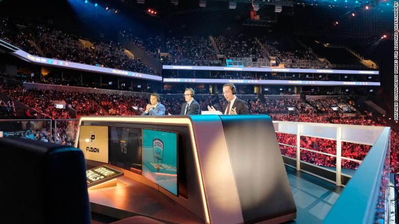

What is eSports?
eSports describes the world of competitive, organized video gaming. Competitors from different leagues or teams face off in the same games that are popular with at-home gamers: Fortnite, League of Legends, Counter-Strike, Call of Duty, Overwatch and Madden NFL, to name a few. These gamers are watched and followed by millions of fans all over the world, who attend live events or tune in on TV or online. Streaming services like Twitch allow viewers to watch as their favorite gamers play in real time, and this is typically where popular gamers build up their fandoms.

Who watches eSports?
Short answer? A lot of people. According to a report from Newzoo, a market analytics company, 380 million people worldwide will watch eSports this year, including 165 million eSports enthusiasts (a term that describes frequent viewers, as opposed to occasional viewers). The bulk of these enthusiasts watch from North America, China and South Korea.